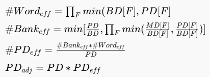

INTRO
ZigZag, Timeloop, Maestro等著名的工作在优化DNN的数据流时将每一层的都看作是一个独立部分，没有考虑到层切换时不同数据流造成的影响，特别是不同数据流对内存使用方式的影响，这可能造成内存读写时的能量浪费。本文提出了一种跨层内存感知数据流调度器，考虑了不同层的内存布局需求对时延和功耗的影响，相比于现有工作能够得到能效更好的数据流安排方案。
METHOD
multi-bank memory arch

BD：bank的位宽
PD：外部对mem的读写位宽
MD：整个mem的物理位宽 = BankNum * BD

上图展示了内存布局对不同数据流产生的影响：
BD:
Case1中Conv1层的输出，每4个同OX的数据存储到1个Bank的同一行，当Conv2需要每个周期消耗4个相同OY的数据时，每次读Bank都只有25%的有效数据。这会导致PE获取的数据不足，增加延迟 ；访问mem的总功耗增加。
Case2中Conv1按OY存储就可以保证两层的memory layout兼容。
PD：
multi-bank 的组合支持不同的WPD和RPD。例如case2中数据按OY = 4的方式存储在Bank中，其他OX可以存储在不同bank的相同行，也可以存储在同一bank的不同行，这取决于Conv2采用的数据流。可用的PD选择必须包含可用的BD。
MD:
Case2采用了OX=2 ，K=2的内存布局，充分利用了MD的宽度同时支持特定的WPD和RPD。
EXPERIMENT
对比对象：无灵活数据接口的ACC & 具有重排序缓冲区的ACC
有效PD
PD资源利用率不足有两种可能：
给定数据流与BD数据布局不匹配
给定数据流与MD布局不匹配导致一次只能同时访问较少的Bank
总之就是PE所需的数据和内存中的数据布局导致PD的利用不充分，进而导致能量和功耗损失。为了评估这一功耗损失，文章提出了计算“有效PD”的方法：
将有效PD带入CMDS即可更加实际的评估内存布局带来的影响。
Reshuffling buffer cost
重新排序缓冲区放置在内存和PE之间，所需的寄存器数量为按照第 j 层 SU 的 RPD 数据布局重组数据而必须缓冲的第 i 层最终输出的数量。在不采取内存感知数据流的情况下，可以避免低效的内存访问，但有面积开销。
分析
将（1）ZigZag框架+含有Reshuffling buffer的架构和（2）ZigZag框架+普通mem架构与（3）CMDS框架+普通mem架构进行对比，可以发现（3）在使得总能耗和延迟仅有2-4%增加的情况下可以比（1）减小3-11%的面积开销，比（2）减少10-500%的能量延迟开销。
通过实验，本文还发现采用BD<PD<MD，且MD较大的参数会取得较好的效果。
存储器组的数量、CMDS 的灵活性和实现存储器组所需的面积之间存在权衡。